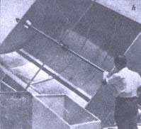

Dr. E.A. Farber
[h]Cylindrical parabolas designed to track (always face) the sun are very efficient collectors of solar energy. This one, which measures 6'X 8', has a glass-covered focal tube. It has been used to produce heated water vapor for a fractional-horsepower steam engine and to heat the oil which operates a solar refrigerator.